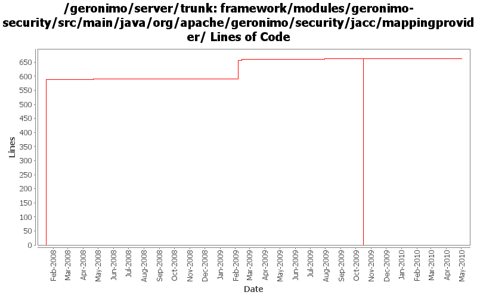

[root]/framework/modules/geronimo-security/src/main/java/org/apache/geronimo/security/jacc/mappingprovider

| Author | Changes | Lines of Code | Lines per Change |
|---|---|---|---|
| Totals | 31 (100.0%) | 1350 (100.0%) | 43.5 |
| djencks | 27 (87.1%) | 1334 (98.8%) | 49.4 |
| xuhaihong | 1 (3.2%) | 8 (0.6%) | 8.0 |
| jdillon | 2 (6.5%) | 4 (0.3%) | 2.0 |
| gawor | 1 (3.2%) | 4 (0.3%) | 4.0 |
a. Calculate web permissions while starting the web module to support setServletSecurity feature in Servlet 3.0
b. Initial support ServletContainerInitializer, some improvements might be needed, such as use ASM ?
c. Support ORDERED_LIBS ServletContext attribute
8 lines of code changed in 1 file:
GERONIMO-4916 step 2 move sandbox osgi framework into trunk
663 lines of code changed in 7 files:
GERONIMO-4916 step 1 remove old framwork
0 lines of code changed in 7 files:
GERONIMO-4155, GERONIMO-4778 Prevent use of a run-as role that isn't configured to supply a non-null Subject. Make servlet dispatch follow run-as roles
4 lines of code changed in 1 file:
Force GeronimoPolicyConfigurationFactory class to be loaded before the new Policy is in the place (GERONIMO-4037)
4 lines of code changed in 1 file:
GERONIMO-4531, GERONIMO-4523 Simplify builder collections. Make security principal-role mappings independent of the application
68 lines of code changed in 1 file:
GERONIMO-4258 move geronimo-j2ee into plugins/j2ee
2 lines of code changed in 1 file:
More loggers back to statics
1 lines of code changed in 1 file:
(GERONIMO-3985) Use SLF4J as the primary logging facade for Geronimo
3 lines of code changed in 1 file:
use a few more generics
9 lines of code changed in 3 files:
GERONIMO-3758 put the default jacc provider implementation classes in a separate package
588 lines of code changed in 7 files: